Betón po zamiešaní sa ukladá do šablon, konečný tvar sa vytvára lisovaním. Po nanesení povrchovej ochrany škridly spolu so šablónami sa zavážajú do temperovacej pece, kde vytvrdnutie betónu urýchľujú zvýšením teploty.
Škridly sú farbené pridaním oxidovej farby do základného materiálu, na povrchu škridiel sa nachádza homogénna ochranná vrstva, ktorá sa neodlišuje svojou farbou od farby základného prvku. Táto ochranná vrstva spôsobuje vodonepriepustnosť škridlí, čím sa zabráni tomu, aby sa mohli vytvárať na konšrukcie škodlivo pôsobiace cykly "zamŕzania a spustenia". Tým sa životnosť môže značne predĺžiť; samozrejme počas uskladňovania a pokrývania je potrebné dbať na vhodnú ochranu betónových škridiel. Z aplikovania ochrannej vrstvy vyplývajú nielen konštrukčné, ale aj estetické výhody, totiž pravdepodobnosť uchytenia sa mách a iných rastlín na nenarušenom povrchu je oveľa menšia. Táto vrstva vzdoruje aj škodlivým účinkom dymov v mestách so znečisteným ovzduším. Rovnomerným opotrebovaním ochrannej vrstvy farba strechy sa nemení, pretože aj materiál v celom jeho priereze je farbený.
Betón - ako stavebný materiál - má tradíciu spred tisícich rokov. Starovekí Gréci používali zmes páleného vápna a piesku už v roku 2000 pred našim letopočtom, kým Rimania k vápennej omietke primiešali aj sopečný popol. Kopula Pantheónu v Ríme so svojím priemerom 43,3 m bol zhotovený z takého betónu už v II. storočí!
Po dlhotrvajúcom zabudnutí so zostavovaním betónov začali experimentovať najprv v Anglicku a potom vo Francúzsku. Aj prvé krytiny z betónových škridiel sa začali objavovať v Európe cca pred 150 rokmi. Upresnením receptúr došlo k všeobecnému rozšíreniu použitia betónu a železobetónu.
Kvalita strešných škridiel zodpovedá predpisom normy STN 490. Suroviny, ich použité množstvá, ako aj ich kvalita sa kontroluje podľa predpisov normy STN 491.
SORTIMENT VÝROBKOV:
Prvky strešného systému Mediterran STANDARD
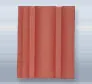
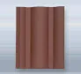
Jednotlivé prvky strešného systému Mediterran Standard sa vyrábajú z vysoko pevnostného farbeného betónu , opatreného dvojnásobnou farebnou povrchovou úpravou. Vyrábajú sa v dvoch farebných prevedeniach : červená , hnedá.
Jednotlivé prvky strešného systému Mediterran Standard :
* Standard základná škridla
* Standard polovičná škridla
* Standard odvetrávacia škridla
* Standard hrebenáč
* Standard začiatočný hrebenáč
* Standard rozdeľovací hrebenáč
* Standard krajná škridla
* Standard pultová škridla
* Standard pultová rohová škridla
Standard základná škridla: je základným prvkom pokrývania, používa sa na pokrytie viac ako 95% strešnej plochy.
Rozmery: 330x 420 mm
Krycia šírka : 300 mm
Krycia dĺžka:340 mm
Spotreba materiálu:10ks/m2 v prípade rovinného tvaru strechy
Prierez lát:min. 30/50 mm
Vzdialenosť lát:v závislosti od sklonu strechy, max.34,0 cm
Prekrytie:u prvkov nad sebou min. 80mm
u prvkov vedľa seba 3,0 cm
Prichytenie: v dvoch bodoch, klince max. 04 mm
Hmotnosť 4,70 kg/ks
Odporúčaná základná hodnota spojitého zaťaženia k statickým výpočtom:
0,54 kN/m2v prípade vzdialenosti lát 31,5 - 33,2 cm
0,51 kN/m2 v prípade vzdialenosti lát 33,3 - 34,0 cm
Prvky strešného systému Mediterran RUNDO
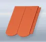
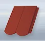
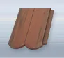
Škridly sa vyrábajú z tuhého, sfarbeného betónu s povrchovou úpravou.
Jednotlivé prvky strešného systému Mediterran Rundo sa vyrábajú z vysoko pevnostného farbeného betónu , opatreného dvojnásobnou farebnou povrchovou úpravou.
* Základná škridla
* Odvetracia škridla
* Hrebenáč
* Rozdeľovací hrebenáč
Základná škridla Rundo® predstavuje základný prvok strešného krytia. Ideálny prípad je ak celková krycia šírka je násobkom krycej šírky základnej škridly. V prípade štvrtinového posunutia ďalšieho radu musí byť zabezpečené prekrytie minimálne 12 cm v mieste oblúka. V takomto prípade štvrtinový a trojštvrtinový rozmer , potrebný pri okrajoch a pri ukončení zabezpečíme rezaním základnej škridly priamo na mieste montáže.
Rozmery : 320x420 mm
Krycia šírka : 300 mm
Závesná dĺžka: 300 mm
Spotreba: 11 - 12 ks/m2
Rozmery strešných lát: min. 24/48 /pri velkosti trámov menej ako 80mm/
Vzdialenosť strešných lát: zálezí od sklonu , max.30,0cm
Pokrytie:prvky nad sebou min. 12cm
prvky vedľa seba 3cm
Upevnenie:minimálne v dvoch bodoch, max. 4mm klinec
Hmotnosť: 4,20kg/ks
Pri statických výpočtoch je možné uvažovať s hmotnosťou
51-57 kg/m2 v závislosti od laťovania.
Prvky škridiel Danubia
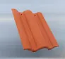 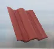 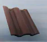 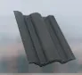
sú vyrábané z vysokopevnostného, v materiáli farbeného betónu, s povrchovou úpravou. K škridlám si môžeme vybrať tehlovo červenú, červenú, antracit, oceľovosivú, a zelenú farbu.
Základná škridla, krajné škridly, odvetrávacia škridla Technický výkres Danubia
Pultová škridla, pultové škridly krajné, polovičná škridla Technický výkres Danubia
Hrebenáč, koncový hrebenáč, rozdeľovací hrebenáč Technický výkres Danubia
* Danubia základná škridla
* Danubia polovičná škridla
* Danubia odvetrávacia škridla
* Danubia hrebenáč
* Danubia začiatočný hrebenáč
* Danubia rozdeľovací hrebenáč
* Danubia krajná škridla
* Danubia pultová škridla
* Danubia pultová rohová škridla
Danubia základná škridla : je základným prvkom pokrývania, používa sa na pokrytie viac ako 95% strešnej plochy.
Rozmery: 330x420 mm
Krycia šírka: 300 mm
Krycia dĺžka: 340 mm
Spotreba materiálu: 10ks/m2 v prípade rovinného tvaru strechy
Prierez lát:min. 24/48 mm
Vzdialenosť lát:v závislosti od sklonu strechy, max 34,0cm
Prekrytie: u prvkov nad sebou min. 8cm
u prvkov vedla seba 3,0cm
Prichytenie: v dvoch bodoch, klince max 4 mm
Hmotnosť: 4,70kg/ks
Odporúčaná základná hodnota spojitého zaťaženia k statickým výpočtom:
0,54 kN/m2 v prípade vzdialenosti lát 31,5 - 33,2 cm
0,51 kN/m2 v prípade vzdialenosti lát 33,3 - 34,0 cm
Vyhlásenie zhody.pdf
Prvky škridiel Mediterran COPPO
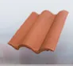
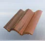
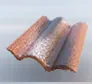
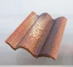
Prvky škridiel Mediterran COPPO® sú vyrábané z vysokopevnostného, v materiáli farbeného betónu, s povrchovou úpravou. K škridlám si môžeme vybrať starobylú, antickú červenú farbu. Z najnovšieho radu povrchovo upravených výrobkov s posýpaním, si môžeme vybrať výrobky s pomenovaním Venezia a Ferrara.
Technické výkresy si môžete zobraziť kliknutím na ikony!
Základná škridla, krajné škridly, odvetrávacia škridla
Pultová škridla, pultové škridly krajné, polovičná škridla
Hrebenáč, koncový hrebenáč, rozdeľovací hrebenáč
V nasledovných Vám detailne predstavíme jednotlivé druhy škridiel:
* Základná škridla
* Odvetrávacia škridla
* Hrebenáč
* Koncový hrebenáč
* Rozdeľovací hrebenáč
* Krajná škridla
* Pultová škridla
* Pultová rohová škridla
Coppo® - základná škridla : je základným prvkom pokrývania, používa sa na pokrytie viac ako 95% strešnej plochy.
Upozornenie! K škridlám Coppo sa nevyrábajú polovičné škridly, čo treba zohľadniť pri určovaní krycej šírky strechy!
Rozmery: 330x420 mm
Krycia šírka:300 mm
Krycia dĺžka: 340 mm
Spotreba materiálu:10 ks/m2 v prípade rovnného tvaru strechy
Prierez lát:min. 24/48 mm
Vzdialenosť lát: v yávislosti od sklonu strechy max. 34,0 cm
Prekrytie:u prvkov nad sebou min.8 cm
u prvkov vedla seba 3 cm
Prichytenie:v dvoch bodoch, klince max. 4 mm
Hmotnosť: 4,40 kg/ks
Odporúčaná základná hodnota spojitého zaťaženia k statickým výpočtom:
0,51 kN/m2 v prípade vzdialenosti lát 32,0 - 33,2 cm
0,49 kN/m2 v prípade vzdialenosti lát 33,3 - 34,0 cm